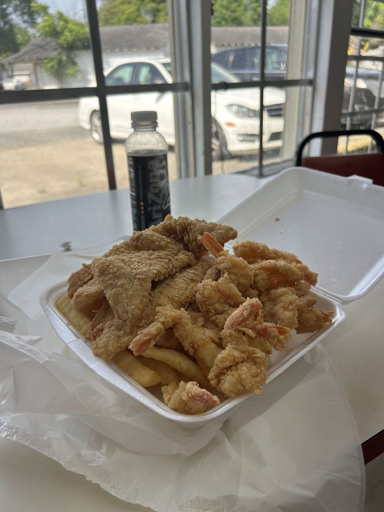

4.7★ reviews
“Very good food just needed more seating but the food was amazing”
“This ARGUEABLY has to be the best local owned family friendly fast food restaurant in town! You can feel the warmth in the food! AND ITS SOOOOO CHEAP!”
“Everything from the service to the food is 5🌟. I can guarantee you won't leave hungry. Pictured is the small seafood platter with popcorn shrimp 🍤 and don't forget to grab you a few Vietnamese egg rolls too.”
“First thing I have to say is even if the food wasn't good. I'd come back because of the excellent customer service. I ended up getting the shrimp platter which came with fried rice. The shrimper really good and the fried rice was actually delicious. It wasn't greasy which tends to be the case with similar places. But believe it or not the star of this particular meal happened to be the tartar sauce which was absolutely delicious. I'm not saying it was homemade but it definitely tasted like. Creamy tangy and just an overall richness. I paid just a little under $11 on this meal. I don't even…”
“You can't go wrong here. The batter can only be judge by taste buds. Order the small, it's still big. Order the large and have a picnic. Pictures do not reveal the flavor that reaches you. Have you had Alligator Garfish? I have and it was like a fried pork chop that wasn't sinful. Come to this place. You'll be exhausted from the amount of delicacy.”
“I love It. They give you a lot of food for your money.”
“The food is so good. The place is small and you can only get take out. The staff is very friendly and quick to wait on you and answer any questions. The service is almost always quick your in and out. It's very sad that they had to close. I wish the owners best of luck with everything”